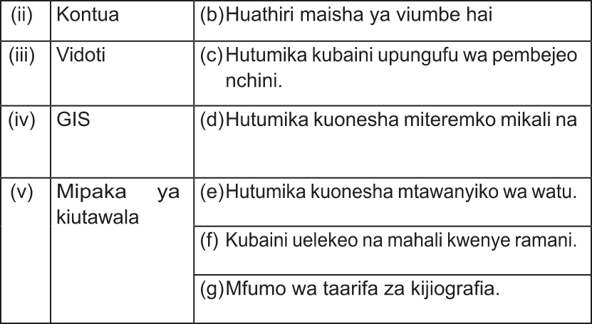

FOR ONLINE READING ONLY

Maswali ya majibu mafupi
7. Eleza namna mistari ya kontua inavyoonekana katika ramani kuonesha maumbo ya sura ya nchi yafuatayo;
(a)Mteremko mkali;
(b)Tambarare; na
(c)Bonde.
8. Eleza jinsi unavyoweza kutumia ramani kupanga safari ya kutembelea hifadhi za taifa.
9. Utawezaje kubaini uelekeo kwa kutumia ramani?
10. Utawezaje kubaini umbali halisi kwa kutumia ramani?
JIOGRAFIA NA MAZINGIRA DARASA LA 4.indd 83
12/09/2025 16:34